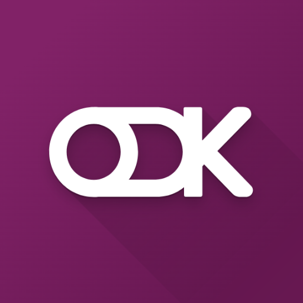

How Odeck Bridge works
Odeck POS requests server-side pricing and tax calculations from Odoo through Odeck Bridge.


Odeck Bridge provides two small, permission-checked server adapters that let a mobile client call Odoo's own pricelist and tax engines. It is an optional technical addon. It does not replace Odoo workflows or introduce a separate business data model.
Odeck POS requests server-side pricing and tax calculations from Odoo through Odeck Bridge.
sudo() in these APIs.The Odeck mobile client uses standard Odoo JSON-RPC for login and ordinary inventory, sales, dashboard, and POS order browsing. Odeck Bridge is only needed when a POS transaction requires server-side pricelist or tax calculation. If one of those calculations cannot be completed, the client stops the operation instead of submitting an estimated amount.
This addon has no user-facing menus. Install it when the mobile POS workflow needs these calculation endpoints; other client features can be used without it.
account and product modules.Odoo Online does not support installing third-party Python addons. Check your hosting plan before installing this module.
odeck_bridge module in an Odoo addons path.The addon performs no external data transfer. Odoo record permissions and company rules remain in force.
The Odeck mobile client is distributed separately and connects to your own Odoo server. Odeck Bridge is only required when its POS workflow needs server-side pricelist or tax calculations. This addon does not provide a mobile application, hosting, or an Odoo account.
Support: lindenliu@hotmail.com